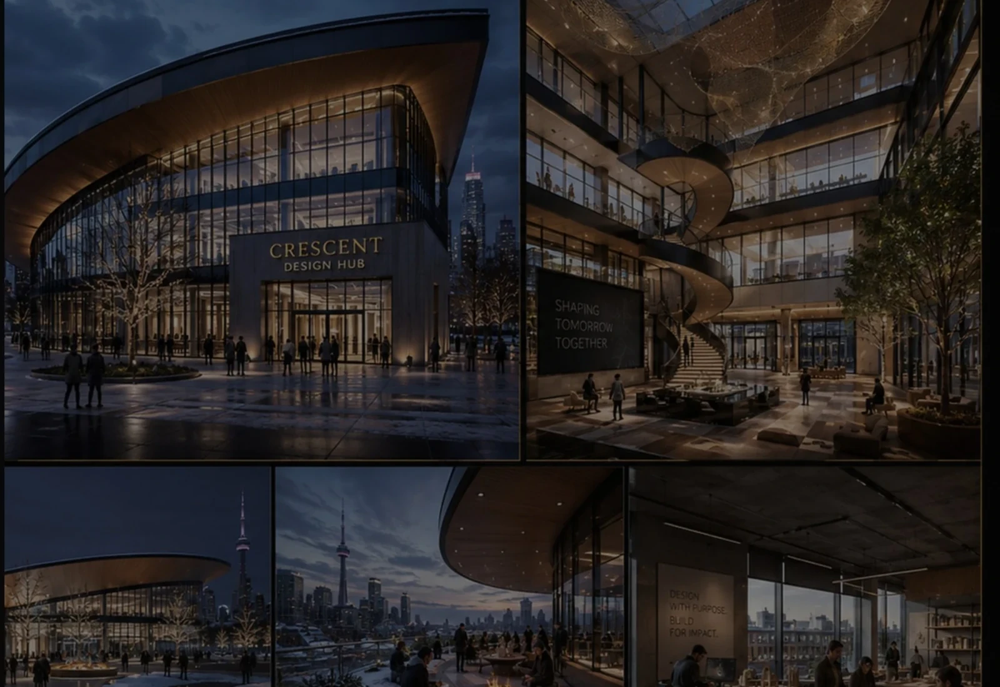
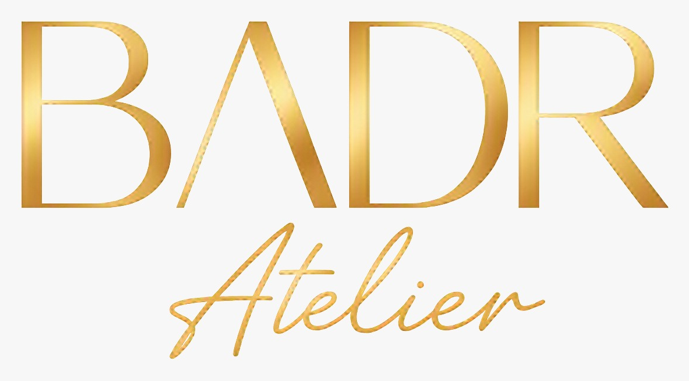
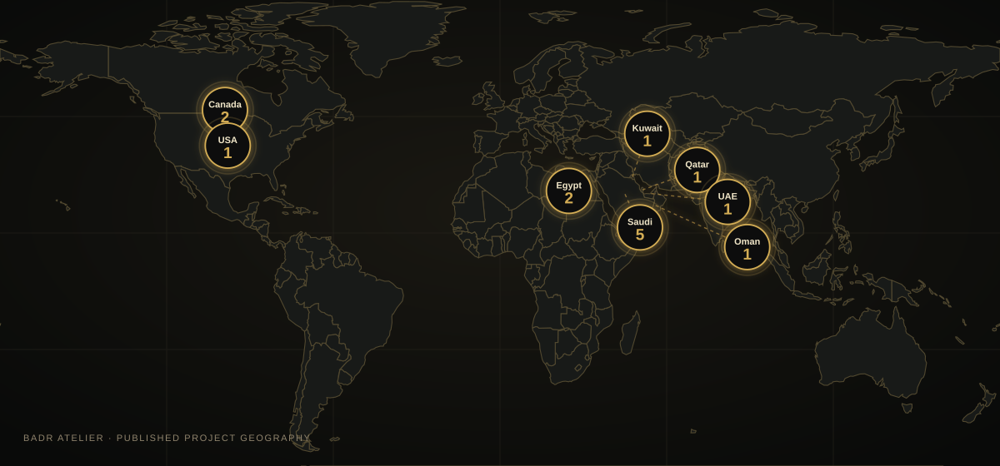

BADR Atelier / Studio
We connect development intelligence with architecture that has a reason to exist.
Founded in 2014 and headquartered in Badr City, Cairo.


Dr. Hani Youssef
Founder • Real Estate Development Strategy • Architecture • BIM
Studio Profile
Cairo based. Internationally oriented. Developer minded.
Our portfolio spans multiple typologies and regions.
Founded2014
A studio built around design quality and coordination.
HeadquartersBadr City
Cairo, Egypt
ReachEgypt • Saudi Arabia • UAE • Qatar • Oman • Kuwait • Bahrain • USA • Canada
Project experience across multiple markets.

Global Reach
A local studio with an international project vocabulary.
Portfolio locations include multiple cities across Egypt, the Gulf and North America.

Published project reach
Zoom for city-level projects and counts.
Zoom for city-level projects and counts.
The People Behind BADR
Strategy, finance, design, engineering and digital delivery — connected by one studio culture.
Studio + Developer